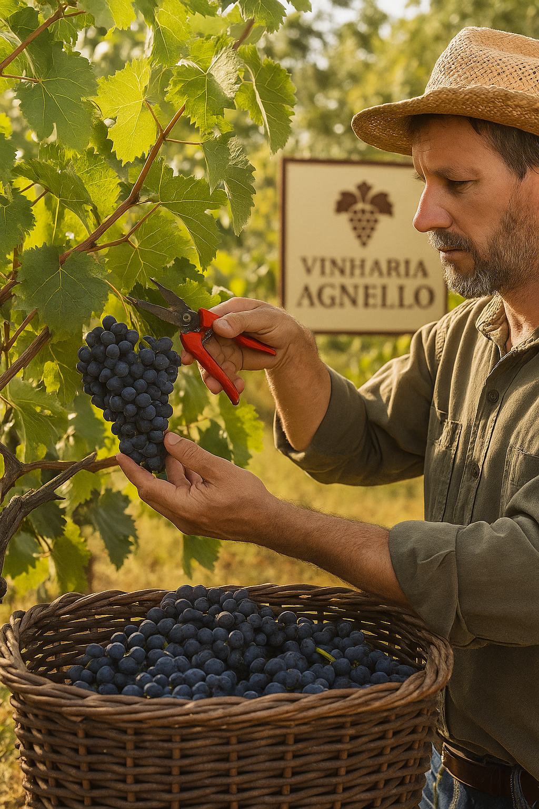
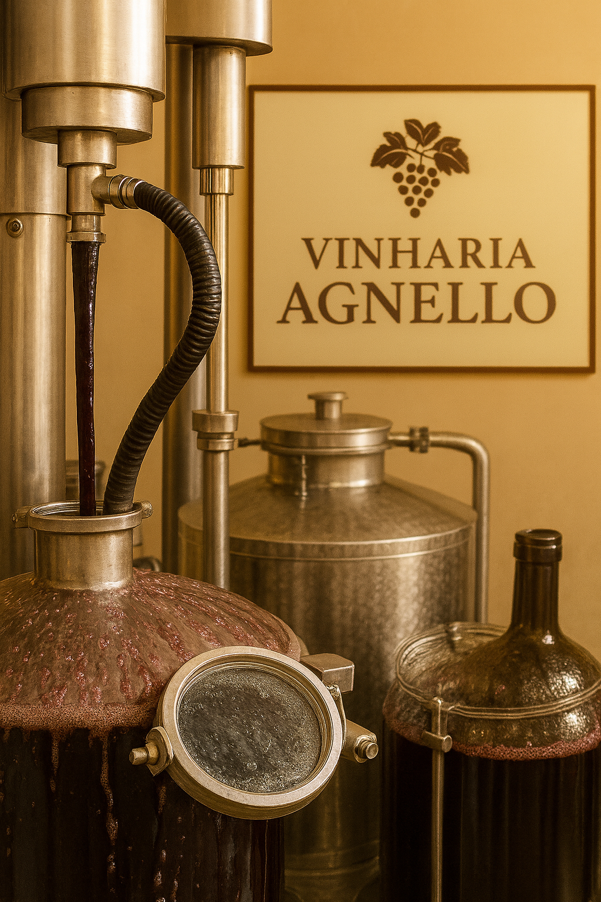
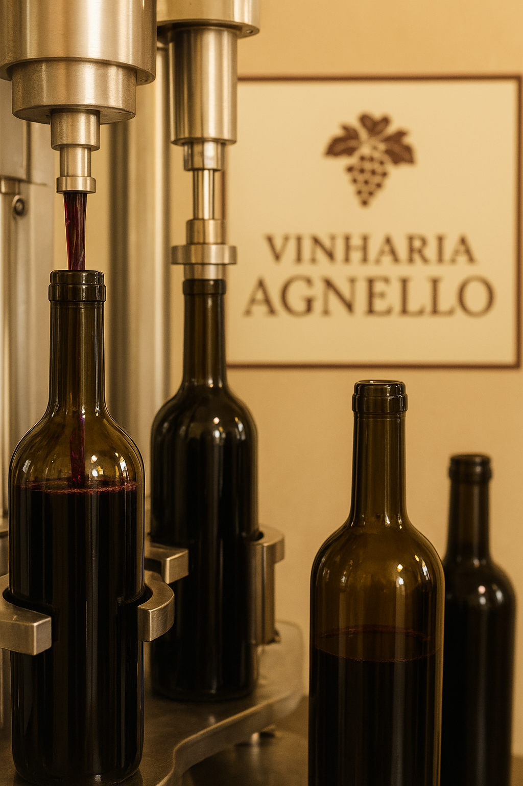

Nosso Processo de Produção
Na Vinharia Agnello, cada garrafa é resultado de dedicação, tradição e paixão pelo vinho. Conheça as etapas que transformam as uvas cuidadosamente selecionadas em vinhos de excelência.
1. Colheita
Selecionamos manualmente as uvas mais maduras e saudáveis diretamente dos vinhedos.
- Colheita realizada no ponto ideal de maturação.
- Uvas tratadas com cuidado para não danificar o fruto.

2. Fermentação
Transformamos o mosto em vinho com fermentação controlada.
- Fermentação natural com leveduras selecionadas.
- Controle de temperatura para preservar aromas e sabor.

3. Envelhecimento
O vinho amadurece em barris de carvalho, adquirindo corpo, aroma e complexidade.
- Uso de barris selecionados para cada tipo de vinho.
- Período controlado para alcançar o sabor ideal.

4. Engarrafamento
O vinho é cuidadosamente filtrado e engarrafado para chegar ao consumidor com máxima qualidade.
- Verificação de qualidade antes do envase.
- Garrafas rotuladas com cuidado e armazenadas corretamente.
Curiosidades do Processo
Alguns detalhes fazem toda a diferença na qualidade de um vinho:
- A escolha do barril influencia diretamente o aroma e sabor final.
- O tempo de fermentação e envelhecimento é ajustado conforme o tipo de uva.
- O controle de temperatura é essencial para evitar que o vinho perca suas características.